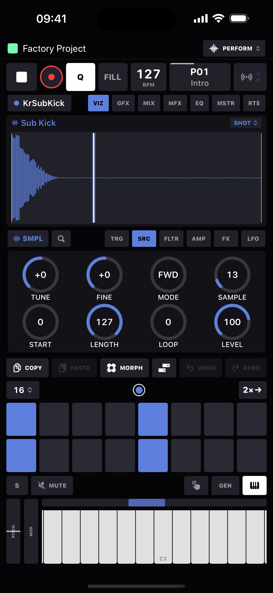

Sequencer
Sixteen tracks, sixteen patterns, and a step grid where every step can carry its own pitch, chord, length, timing, probability and a stack of parameter locks.
The shape of a pattern
- 16 tracks, each hosting one device.
- 16 patterns per project (P01–P16), each with an optional name.
- Per track, per pattern: a length of 1–128 steps (16 per page), a speed from 1/8× to 4×, and its own swing override - so polymetric loops are just tracks of different lengths.
- A step is a 16th note, subdivided into 24 ticks for micro-timing; nudge runs −23…+23 ticks, just under a step either way.
- Tempo 30–300 BPM, swing 50–80%, and per-pattern scale with root (22 scales from Major to Minor Bebop - or Chromatic for off).
Trigs
Tap a step to place a trig; tap again to clear it (clearing wipes everything the step carried, so re-adding starts fresh). Every value a trig holds is optional - unset means "ride the track default", set means a per-step lock and reads amber in the editors.
| Field | Range | Notes |
|---|---|---|
| NOTE | C-2 … G8 | Unset = track default note. Up to 6 chord voices per trig. |
| VEL | 0–127 | 0 shows as GHOST - a silent trig that only speaks when a live velocity offset lifts it. |
| GATE | 1/24 step … 128 steps | Whole steps read bare ("1"), fractions get decimals. |
| NUDGE | −23 … +23 ticks | Negative nudge before step 1 wraps to the loop tail. |
| PROB | 1–100% | Rolled after the condition passes - both must succeed. |
| COND | see below | Trig condition. |
| RETRIG | ×2…×8 | Ratchet - see below. |
| P-locks | any knob | Per-step parameter values (CC locks on MIDI tracks). |
Trig conditions
| Label | Fires… |
|---|---|
| - | Always (default). |
| FILL / ¬FILL | Only while FILL is held / released. Holding FILL flips every one of these at once. |
| 1ST / ¬1ST | Only the first pass after start or a pattern switch / every pass except it. |
| PRE / ¬PRE | Only if this step fired on the previous pass / only if it didn't. |
| NEI / ¬NEI | Only if the previous track's last conditional step fired / didn't. |
| LST / ¬LST | Only on the final pass before a queued pattern change / every other pass. |
| 1:2 … 1:8 | Cycle conditions: pass n of every m (1:2, 2:2, 1:4, 2:4, 3:4, 4:4, 1:8). |
Retrig (ratchet)
Per step: 2, 3, 4, 6 or 8 hits at any subdivision from 1/4 to 1/64T, with a velocity RAMP from 25% to 175% across the burst ("flat" at 100%). A track-level default retrig can ratchet everything, with individual steps opting out via an explicit OFF. On a sampler with Voices > 1 the hits overlap and ring; on mono devices each sub-hit chokes the last.
Parameter locks
The rule is simple: while a step is latched, every knob on every page writes to that step instead of the track. Long-hold a trig to latch it (the TRG editor opens), then turn anything - the knob's arc goes amber and the step gains an amber corner notch. Unlatch to edit the track's base sound again.
- Double-tap a knob to clear its lock (double-tap also clears any value cell back to the track default).
- On MIDI tracks locks are real CC events sent just ahead of the note - including setup locks: CHANNEL, BANK, SUB (bank LSB) and PROG, so one step can re-channel or fire a patch change.
- The step's note and its locks share one probability/condition roll.
Editing on the grid
- Long-press (0.18 s) latches a step for editing. Further long-presses grow the selection: hold several trigs and every edit fans across all of them. A tap moves the latch; tapping any selected step drops the whole selection.
- COPY / PASTE are context-aware: with a step latched they move that step (a multi-selection copies with its spacing and lays back out from the paste target); with nothing latched they act on the whole track - PASTE becomes a menu: Paste Whole Track, Paste Sequence, Paste Device.
- A single copied step fans across a live multi-selection.
- UNDO / REDO: 50 project-level snapshots; rapid edits coalesce.
- The page strip holds the length picker, page dots (long-press a dot to loop just that page: amber ring), follow-playhead toggle, and 2×→ which doubles the loop and duplicates its content.
Track defaults
With nothing latched, the TRG page shows TRACK DEFAULTS - the same NOTE / VEL / GATE / PROB / NUDGE / COND / RETRIG / RAMP cells, but editing what every unset step inherits. This is where a track's default note (the pad pitch), default gate and default probability live.
Recording
Arm REC and play: the on-screen keyboard, external MIDI in, and pads in PLAY mode all record. Recording is track-aware: pad hits land on the pad's own track; keys and MIDI-in land on the selected track.
- Hits snap to the nearest step with the remainder written as nudge; gates tidy to the nearest half step. Simultaneous notes stack into chords (up to 6 voices).
- Q toggles record quantize: lit, recorded hits hard-snap to the step. Hold Q for the quantize panel: a GLOBAL QUANTIZE slider and the selected track's own amount. Global and track quantize are playback quantize - always on, independent of the Q light, non-destructively pulling micro-timing toward the grid by the larger of the two amounts.
- Knob recording: turn any knob while recording and it writes an automation lane at full tick resolution. Recording over an old sweep replaces it - no interleaved mess. Clear a track's lanes from its track sheet.
- Count-in: off / 1 / 2 / 4 bars (record only), set in the tempo popover along with the metronome and its volume.
Transport bar
| Control | Does |
|---|---|
| ▶ / ■ | Play / stop. |
| ● REC | Arms recording (writes only while playing; a red strip tops the bar while hot). |
| Q | Tap: record quantize. Hold: quantize amount sliders. |
| FILL | Momentary - hold to flip every FILL/¬FILL condition; lights amber. |
| BPM | Drag vertically to change; tap for the tempo panel: slider, TAP tempo, swing 50–80%, metronome + volume, count-in. |
| Pattern | Shows the active pattern name and label; pulses white/amber when a switch is queued. Tap for the pattern grid. |
Patterns
The pattern sheet is a 4×4 grid: tap to queue a switch at the next pattern boundary (the pad wears a pulsing amber ring), hold to jump now with tracks keeping phase. While stopped a tap just selects. Long-press menus offer Restart Now, Play Once Then Return, Name…, Copy Current Here, and Clear.
- SCALE row: pick a root and scale for the pattern; the keyboards dim out-of-scale keys, and QUANTIZE TRIGS folds existing notes into the scale.
Song mode
A song chains rows of pattern × repeats (1–32 each, up to 99 rows), each row optionally recalling a morph as it takes over. Toggle SONG MODE and press play: the chain runs from the top, looping if LOOP is on, otherwise holding the last pattern. Reorder with drag handles; hand-picking a pattern exits song mode.
A project holds up to 16 songs. The strip above the row editor picks the active one: tap a chip to switch (mid-playback, the new song's first row chains in at the next pattern boundary), tap + for a fresh song, and hold a chip to rename, duplicate or delete it. Each song keeps its own rows and LOOP setting, and everything saves with the project.
Mutes, pads and live modes
The pad board is 16 track pads that flash with every note. The latch row above switches what they do:
| Mode | Pads become |
|---|---|
| MUTE | Mute toggles. Two scopes: GLOBAL (survives pattern changes) and PTN (saved with the pattern) - what's silent is the union. Slide across pads to paint mutes. |
| PLAY | Performance pads: touch-down fires the track's default note, touch-up releases - and REC captures hits onto each pad's own track. |
| GEN | The generator band: two euclidean pulse generators per track (combined OR/XOR/AND/SUB) and an arpeggiator (UP, DOWN, U/D, D/U, CONV, DIV, ORDER, RND; 1–6 octaves; gate 25–100%). |
| KEYS | The full live keyboard (below). |
The live keyboard
- Full 128-note range with a scroll strip above it - the strip is the whole range, the lit window is what you see; each track remembers its position.
- True multi-touch: one finger per note, slide across boundaries for glissando while other fingers hold a chord.
- Velocity comes from where you touch the key: soft at the top edge, 127 at the bottom.
- Scale-aware: out-of-scale keys dim but stay playable; keys light in the track color when pressed, sequenced, or held by external MIDI.
- PITCH wheel springs back to center (real pitch bend on MIDI tracks, ±2 semitones render-side on internal devices). MOD wheel latches - CC 1 out on MIDI tracks, filter cutoff on internal devices, and it records.

Track setup
The track sheet holds the track's identity: name, device, MIDI output and channel (for MIDI tracks), color, audio out (Master, stereo pairs or mono outs), sampler Voices (1–8 - the choke control: 1 chokes each hit with the next, more lets them ring), the per-track quantize slider, and preset browse/save. Below it, the per-pattern section: length, speed, swing override, and Clear Recorded CC Automation.